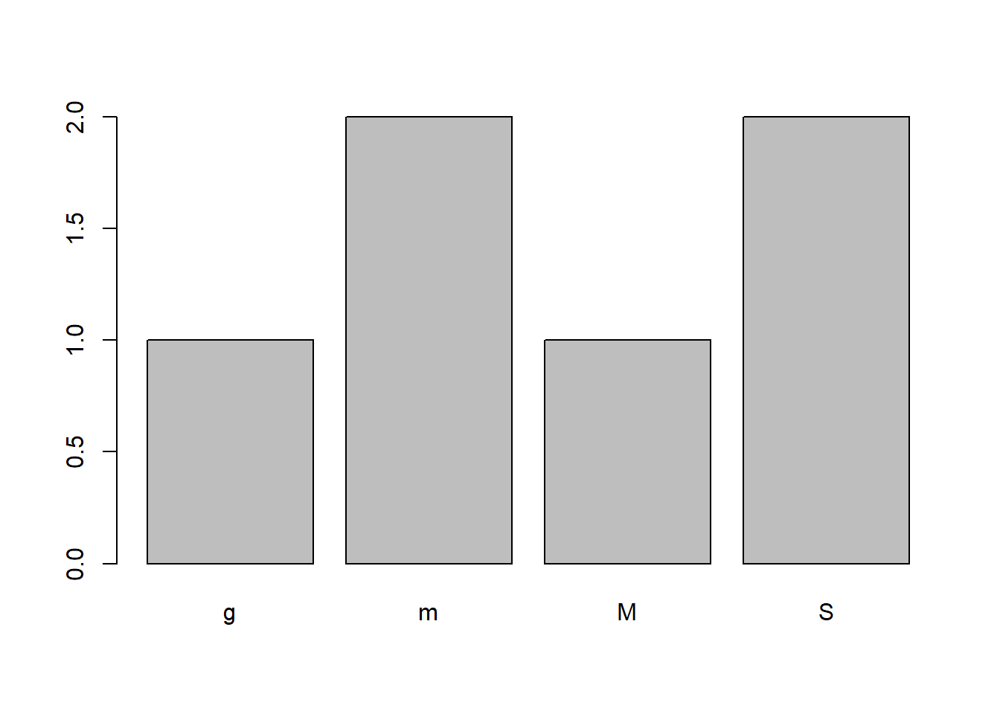
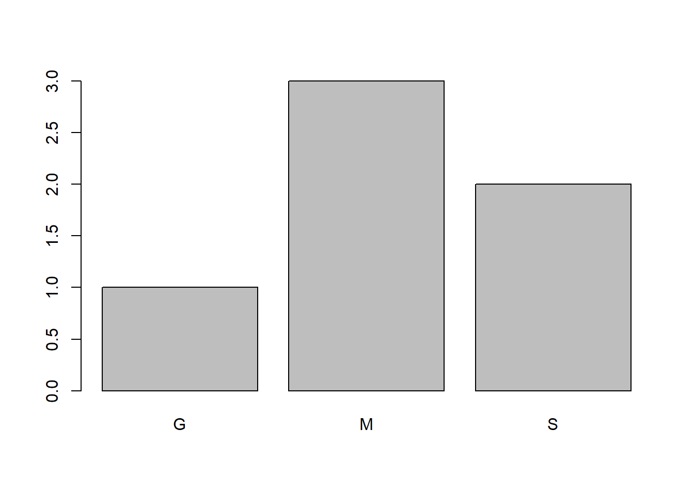
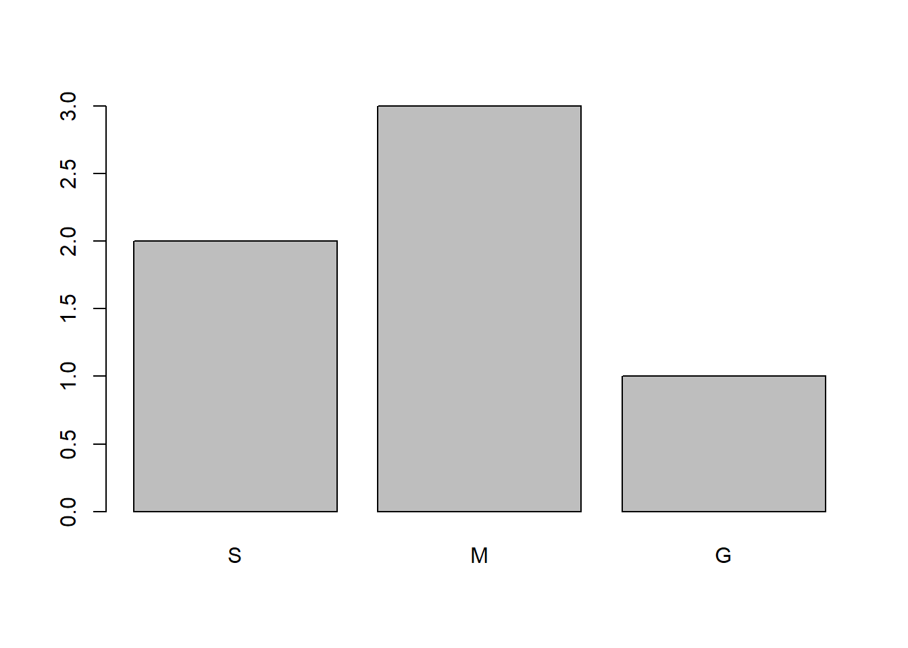

1+1-1*(1+1-1)/1+1*(-1)[1] 0Objetivo: estudiar qué es una variable en R.
En este ejercicio vamos a:
Primer acertijo de redes sociales
1+1-1*(1+1-1)/1+1*(-1)[1] 0Asigna los numeros a cada fruta
mango <- 10
manzana <- 5
aguacate <- 15Resuelve el complejo acertijo
resultado <- 2 * aguacate + 4 * manzana + 1.5 * mangoImprime el resultado por pantalla
print(resultado)[1] 65Observa la clase del resultado
class(resultado)[1] "numeric"Crea una variable con algún nombre
nombre <- "Diana"Observa la clase del nombre
class(nombre)[1] "character"Es 1 mayor que 2
binario <- 1 > 2Cuál es la clase de esto
class(binario)[1] "logical"Suma nombre con resultado
No se pueden unir variables de distintos tipos de datos
Objetivo: estudiar qué es una vector en R.
En este ejercicio vamos a:
Crear vector carácter con nombre de las películas
nombre <- c("Shrek", "Shrek 2", "Shrek tercero", "Shrek: Felices por siempre")Crear vector numérico con puntuación de las películas
puntuacion <- c(7.9, 7.2, 6.1, 6.3)Crear vector lógico sobre si la película es posterior a 2015
posterior_2005 <- c(FALSE, FALSE, TRUE, TRUE)Sumar 2 a la puntuación
puntuacion + 2[1] 9.9 9.2 8.1 8.3Dividir la puntuación entre 2
puntuacion / 2[1] 3.95 3.60 3.05 3.15Crea la puntuación de diana
puntuacion_de_diana <- c(10, 9, 6, 7)Calcular diferencia entre puntuaciones
puntuacion_de_diana - puntuacion[1] 2.1 1.8 -0.1 0.7Calcular la longitud del vector
length(puntuacion)[1] 4Sumar los elementos del vector
sum(puntuacion)[1] 27.5Calcular el promedio del vector puntuacion
mean(puntuacion)[1] 6.875Selección basada en posición
Seleccionar la tercera película
nombre[3][1] "Shrek tercero"Seleccionar la primera y la última película
nombre[c(1,4)][1] "Shrek" "Shrek: Felices por siempre"Selección basada en condición lógica
Crear condición lógica
puntuacion_baja <- puntuacion < 7Mostrar condición para ver TRUE/FALSE
print(puntuacion_baja)[1] FALSE FALSE TRUE TRUEMostrar puntuaciones bajas
puntuacion[puntuacion_baja][1] 6.1 6.3Mostrar nombres de películas con puntuaciones bajas
nombre[puntuacion_baja][1] "Shrek tercero" "Shrek: Felices por siempre"Puntuación mayor a 7, …
puntuacion_alta <- puntuacion > 7print(puntuacion_alta)[1] TRUE TRUE FALSE FALSEMostrar puntuaciones altas
puntuacion[puntuacion_alta][1] 7.9 7.2Mostrar nombres de películas con puntuaciones altas
nombre[puntuacion_alta][1] "Shrek" "Shrek 2"Objetivo: estudiar qué es una matriz en R.
En este ejercicio vamos a:
Crear vectores para las columnas de la matriz
warner <- c(20, 20, 16, 17, 17, 22, 17, 18, 19)
disney <- c(11, 13, 11, 8, 12, 11, 12, 8, 10)
fox <- c(18, 15, 15, 15, 16, 17, 15, 13, 11)Creando matriz a partir de vectores
peliculas <- matrix(c(warner, disney, fox),
nrow = 9,
ncol = 3)Imprimir matriz en consola
print(peliculas) [,1] [,2] [,3]
[1,] 20 11 18
[2,] 20 13 15
[3,] 16 11 15
[4,] 17 8 15
[5,] 17 12 16
[6,] 22 11 17
[7,] 17 12 15
[8,] 18 8 13
[9,] 19 10 11Agregar nombres de columnas
colnames(peliculas) <- c('warner', 'disney', 'fox')Agregar nombres de filas/renglones
rownames(peliculas) <- c('2010', '2011', '2012', '2013', '2014', '2015', '2016', '2017', '2018')Imprimir matriz por segunda vez
print(peliculas) warner disney fox
2010 20 11 18
2011 20 13 15
2012 16 11 15
2013 17 8 15
2014 17 12 16
2015 22 11 17
2016 17 12 15
2017 18 8 13
2018 19 10 11Resta 5 a la matriz
peliculas - 5 warner disney fox
2010 15 6 13
2011 15 8 10
2012 11 6 10
2013 12 3 10
2014 12 7 11
2015 17 6 12
2016 12 7 10
2017 13 3 8
2018 14 5 6Sumar matriz consigo misma (se hace elemento a elemento)
peliculas + peliculas warner disney fox
2010 40 22 36
2011 40 26 30
2012 32 22 30
2013 34 16 30
2014 34 24 32
2015 44 22 34
2016 34 24 30
2017 36 16 26
2018 38 20 22Multiplicar la matriz consigo mismo (se hace elemento a elemento)
peliculas * peliculas warner disney fox
2010 400 121 324
2011 400 169 225
2012 256 121 225
2013 289 64 225
2014 289 144 256
2015 484 121 289
2016 289 144 225
2017 324 64 169
2018 361 100 121Seleccionar un elemento de la matriz
peliculas[3,2][1] 11peliculas['2012', 'disney'][1] 11Seleccionar más de un elemento de la matriz
peliculas[c(3,2), c(2,3)] disney fox
2012 11 15
2011 13 15peliculas[c(3,2), c('disney', 'fox')] disney fox
2012 11 15
2011 13 15Seleccionar una fila o renglón
peliculas[3,]warner disney fox
16 11 15 peliculas['2012',]warner disney fox
16 11 15 Seleccionar una columna
peliculas[,2]2010 2011 2012 2013 2014 2015 2016 2017 2018
11 13 11 8 12 11 12 8 10 peliculas[,'disney']2010 2011 2012 2013 2014 2015 2016 2017 2018
11 13 11 8 12 11 12 8 10 Objetivo: estudiar qué son factores en R.
En este ejercicio vamos a:
crear vector de ventas correr esto antes de empezar…
tallas <- c('m', 'g', 'S', 'S','m', 'M')intentar graficar
# plot(tallas)crear factor de un vector
tallas_factor <- factor(tallas)plot(tallas_factor)
levels(tallas_factor)[1] "g" "m" "M" "S"creando factor recodificado (Limpieza de datos)
tallas_recodificado <- factor(tallas,
levels = c('g', 'm', 'M', 'S'),
labels = c('G', 'M', 'M', 'S'))graficando ventas_recodificado
plot(tallas_recodificado)
ordenando niveles (copiar factor anterior)
tallas_ordenado <- factor(tallas,
ordered = TRUE,
levels = c('S', 'm', 'M', 'g'),
labels = c('S', 'M', 'M', 'G'))viendo el orden en los niveles
print(tallas_ordenado)[1] M G S S M M
Levels: S < M < Ggraficando el factor ordenado
plot(tallas_ordenado)
Objetivo: estudiar qué son dataframes en R.
En este ejercicio vamos a:
vectores sobre peliculas de Shrek correr esto antes de empezar…
nombre <- c("Shrek", "Shrek 2", "Shrek Tercero", "Shrek: Felices por siempre")
puntuacion <- c(7.9, 7.2, 6.1, 6.3)
posterior_2005 <- c(FALSE, FALSE, TRUE, TRUE)crear dataframe de vectores
peliculas_df <- data.frame(nombre,
puntuacion,
posterior_2005)mostrar dataframe
peliculas_df nombre puntuacion posterior_2005
1 Shrek 7.9 FALSE
2 Shrek 2 7.2 FALSE
3 Shrek Tercero 6.1 TRUE
4 Shrek: Felices por siempre 6.3 TRUEcambiar nombre de dataframe
names(peliculas_df) <- c('NOMBRE',
'PUNTUACION',
'POSTERIOR_2005')mostrar dataframe (sí, otra vez)
peliculas_df NOMBRE PUNTUACION POSTERIOR_2005
1 Shrek 7.9 FALSE
2 Shrek 2 7.2 FALSE
3 Shrek Tercero 6.1 TRUE
4 Shrek: Felices por siempre 6.3 TRUEseleccionar un elemento del dataframe
peliculas_df[3,2][1] 6.1peliculas_df[3,'PUNTUACION'][1] 6.1seleccionar más de un elemento del dataframe
peliculas_df[c(3,4), c(2,3)] PUNTUACION POSTERIOR_2005
3 6.1 TRUE
4 6.3 TRUEpeliculas_df[c(3,4), c('PUNTUACION', 'POSTERIOR_2005')] PUNTUACION POSTERIOR_2005
3 6.1 TRUE
4 6.3 TRUEseleccionar una fila o renglón del dataframe
peliculas_df[3,] NOMBRE PUNTUACION POSTERIOR_2005
3 Shrek Tercero 6.1 TRUEseleccionar una columna del dataframe
peliculas_df[,2][1] 7.9 7.2 6.1 6.3peliculas_df[,'PUNTUACION'][1] 7.9 7.2 6.1 6.3peliculas_df$PUNTUACION[1] 7.9 7.2 6.1 6.3mostrar el dataframe
peliculas_df NOMBRE PUNTUACION POSTERIOR_2005
1 Shrek 7.9 FALSE
2 Shrek 2 7.2 FALSE
3 Shrek Tercero 6.1 TRUE
4 Shrek: Felices por siempre 6.3 TRUEmostrar el indice de la columna de puntuacion con order
order(peliculas_df$PUNTUACION)[1] 3 4 2 1funcion order (menor a mayor)
orden_menor_mayor <- order(peliculas_df$PUNTUACION, decreasing = FALSE)mostrar el dataframe ordenado
peliculas_df[orden_menor_mayor,] NOMBRE PUNTUACION POSTERIOR_2005
3 Shrek Tercero 6.1 TRUE
4 Shrek: Felices por siempre 6.3 TRUE
2 Shrek 2 7.2 FALSE
1 Shrek 7.9 FALSEfuncion order (mayor a menor)
orden_mayor_menor <- order(peliculas_df$PUNTUACION, decreasing = TRUE)mostrar el dataframe ordenado
peliculas_df[orden_mayor_menor,] NOMBRE PUNTUACION POSTERIOR_2005
1 Shrek 7.9 FALSE
2 Shrek 2 7.2 FALSE
4 Shrek: Felices por siempre 6.3 TRUE
3 Shrek Tercero 6.1 TRUEguardar el dataframe ordenado
df_ordenado <- peliculas_df[orden_mayor_menor, ]mostrar el dataframe
df_ordenado NOMBRE PUNTUACION POSTERIOR_2005
1 Shrek 7.9 FALSE
2 Shrek 2 7.2 FALSE
4 Shrek: Felices por siempre 6.3 TRUE
3 Shrek Tercero 6.1 TRUEObjetivo: estudiar qué son las listas en R
En este ejercicio vamos a: 1. Crear listas en R 2. Seleccionar elementos de una lista 3. Identificar listas en R
Cargando datos de videos anteriores (correr esto antes de empezar…)
nombre <- c("Shrek", "Shrek 2", "Shrek Tercero", "Shrek: Felices por siempre")
puntuacion <- c(7.9, 7.2, 6.1, 6.3)
posterior_2005 <- c(FALSE, FALSE, TRUE, TRUE)
warner <- c(20, 20, 16, 17, 17, 22, 17, 18, 19)
disney <- c(11, 13, 11, 8, 12, 11, 12, 8, 10)
fox <- c(18, 15, 15, 15, 16, 17, 15, 13, 11)crear diferentes estructuras de datos en R
vector_titulos <- nombre
matriz_peliculas <- matrix(c(warner, disney, fox),
nrow = 9,
ncol = 3)
peliculas_df <- data.frame(nombre,
puntuacion,
posterior_2005)crear lista en R
mostrar lista
cambiar nombre de dataframe
mostrar lista (sí, otra vez) # práctica 2: Seleccionar elementos de una lista Seleccionar vector de la lista
Seleccionar el tercer elemento del vector de la lista
Seleccionar fila 5 y columna 3 de la matriz de la lista
agregar dataframe a lista
revisar que está el dataframe
eliminar un elemento de lista
revisar que no está el vector